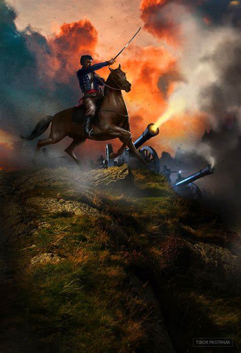

Adopest and the French Revolution
05/06/1789

The French Revolution was a crucial event in modern history. Next, I will highlight some fundamental aspects: End of the Old Regime: The Revolution marked the definitive end of feudalism and monarchical absolutism in France. He abolished the privileges of the nobility and the monarchy, establishing a more egalitarian society. Declaration of the Rights of Man and of the Citizen: The Revolution proclaimed the Declaration of the Rights of Man and of the Citizen, laying the foundations for individual rights and equality before the law. Fall of the monarchy: The execution of King Louis XVI symbolized the break with centuries of absolute monarchy. The First French Republic replaced the monarchy.
The French Revolution was a crucial event in modern history. 
04/18/2007
Brian McClellan's "The Gunpowder Mages" and the French Revolution share some notable similarities, albeit in different contexts. Next, we will explore these connections:
Fight against oppression and inequality:
In both Adopest and the French Revolution, the people face an oppressive and unequal system. In Adopest, nobility and royalty exploit the people, while in the French Revolution, absolute monarchy and privileged aristocracy oppress the masses.
Coup d'état and regime change:
In Adopest, Marshal Tamas leads a coup to overthrow the nobility and establish a more equal society. In the French Revolution, the storming of the Bastille and the fall of the monarchy mark a radical change in the system of government.